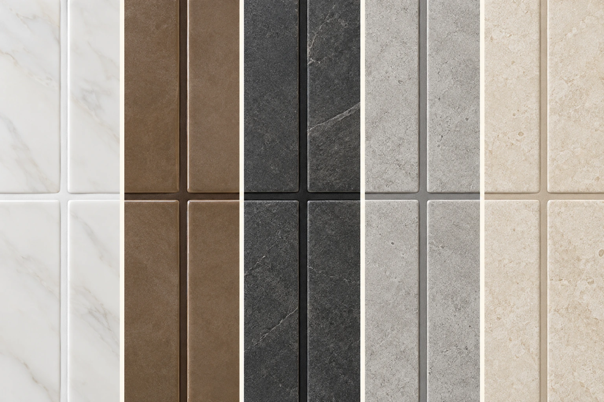

Evaluación
Revisamos el soporte y la necesidad.
JUNTAS Y ZONAS HÚMEDAS
Renueva, sella e impermeabiliza juntas con adherencia extrema y aplicación práctica.

SOLUCIÓN KAEMENTO
Formulada con base en microcemento, aditivos y polímeros. Puede aplicarse sobre boquillas existentes en buen estado, reduce reprocesos y desarrolla alta dureza una vez seca.
PASO A PASO
Revisamos el soporte y la necesidad.
Acondicionamos la superficie.
Ejecutamos el sistema especificado.
Finalizamos y verificamos el desempeño.
BOQUILLA MÁGICA · CINCO COLORES
Cinco combinaciones de boquilla y tableta para visualizar un acabado armónico, con juntas lisas y uniformes.

Collage ilustrativo generado con IA. Los tonos en pantalla son orientativos; confirme el color con una muestra física. Pulse la imagen para ampliar.
INFORMACIÓN CLAVE
Desempeño integrado dentro del sistema.
Aplicación definida según soporte y uso.
Acompañamiento técnico KAEMENTO.
No recomendamos seleccionar una capa o producto de forma aislada sin revisar el soporte y el uso final. La preparación, dosificación, aplicación y curado forman parte del desempeño.
PREGUNTAS FRECUENTES
La compatibilidad depende del soporte, su estabilidad, humedad, absorción y uso final. Recomendamos una evaluación previa y seguir la ficha o manual correspondiente.
No. El desempeño de cualquier sistema depende de una base limpia, firme, estable y correctamente preparada.
Sí. KAEMENTO ofrece orientación para seleccionar el sistema, entender la aplicación y reducir errores en obra.
ASESORÍA KAEMENTO